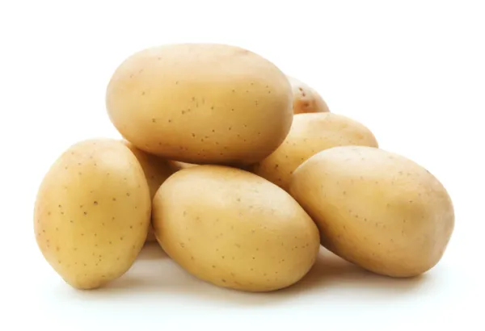
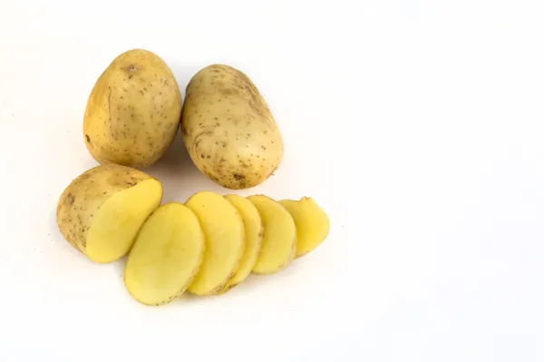
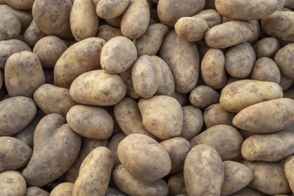

La papa Monalisa es una de las variedades de patatas con menor contenido de agua, lo que la hace muy versátil en la cocina. Es de tamaño mediano, forma ovalada, tacto suave y color claro.
Se clasifica como patata temprana y su alto porcentaje de almidón la hace muy útil para freír, puesto que acumula poco aceite. Hervida, llega antes que otras variedades a su punto de cocción y, además, mantiene la forma mejor, ayudando a la presentación del plato.
La patata agria es una de tamaño grande, forma ovalada, piel marrón claro y fina y pulpa amarilla. Es una patata especialmente recomendada para freír, debido a su bajo contenido en azúcares, y destaca por su gran capacidad de conservación, por lo que se utiliza a menudo en la industria alimentaria para la elaboración de productos como tortillas de patatas o snacks.
La patata Kennebec o patata gallega es la más popular en todo el mundo. Se trata de una patata grande, de rápido crecimiento y sabor fuerte y muy apreciado. Su piel es ligeramente moteada y fina, de color amarillo o marrón claro y su pulpa es blanca.
